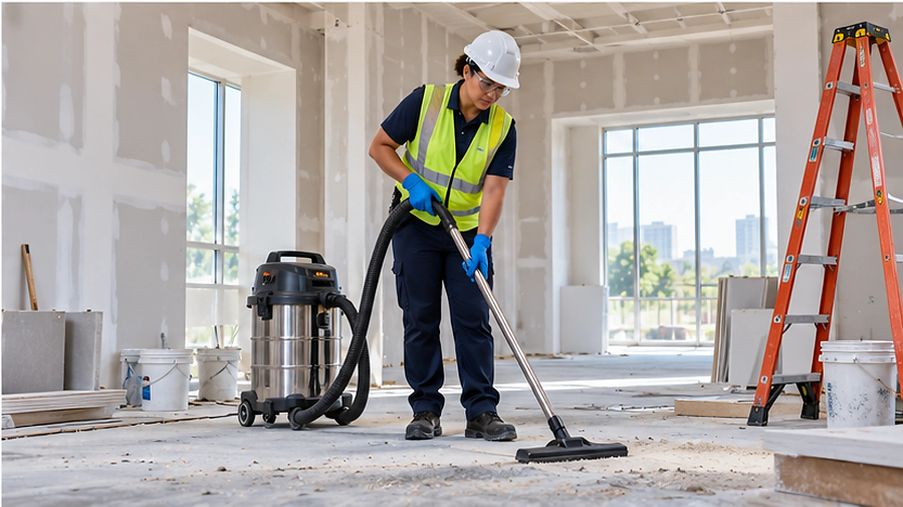

Post-Construction & Renovation Cleaning
Final cleanup after construction or renovation, including dust, floors, glass, fixtures, surfaces, restrooms, entrances, and readiness before employees or customers use the space.
Areas We Clean
The cleaning plan can be built around the areas that need attention, property access, traffic, and operating hours.
Cleaning Around the Way the Property Is Used
Wait Until the Dustiest Work Is Finished
Detailed final cleaning is most effective after sanding, cutting, patching, and other dust-producing work is substantially complete.
Remove Dust Beyond the Main Work Area
Fine construction dust can settle on floors, glass, fixtures, cabinets, frames, and nearby rooms, so the final cleanup should cover the full affected space.
Prepare the Space for Normal Use
The goal is a building that looks and feels ready for employees, customers, tenants, or the next turnover step.
Schedule the Final Clean Before Occupancy
When possible, final detail cleaning is easier before desks, displays, furniture, or normal daily traffic fill the space.
Clean Spaces
A practical answer for a common cleaning question related to this property type.
Final cleaning before a space reopens
Final cleaning is different from ongoing cleanup during active work. Confirm that dust producing tasks are substantially finished, identify surfaces and rooms affected by residue, and share the expected occupancy date. For cleaning during the project, see Construction Cleaning.
Related information: Construction Cleaning and Commercial.